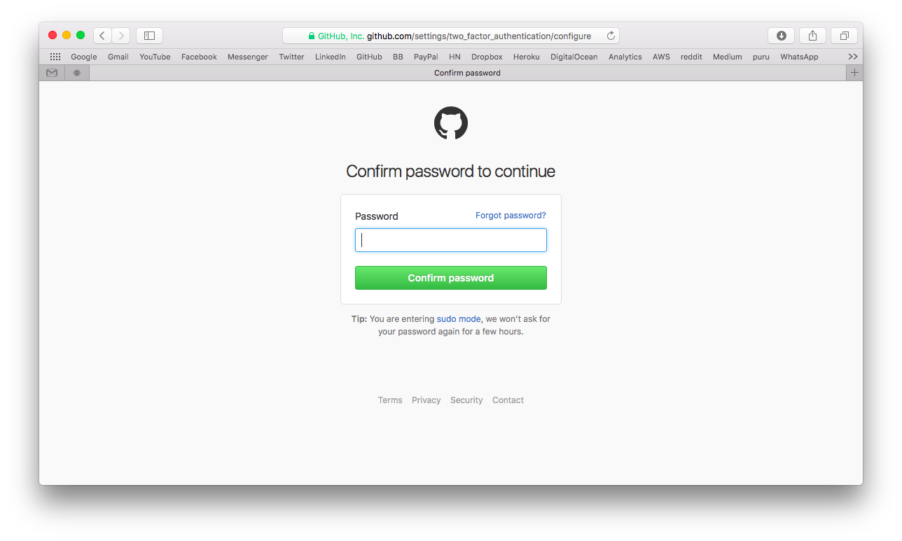
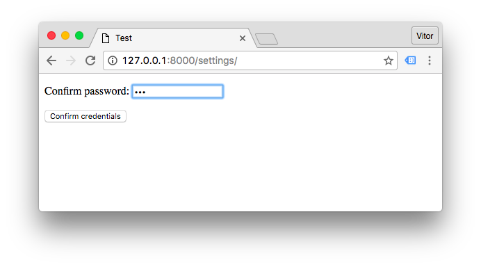
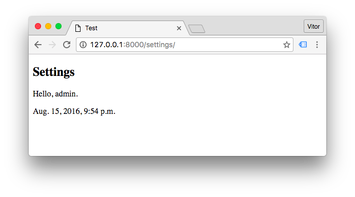

It is a very common practice nowadays to keep alive signed in user sessions for a very long time. But some web pages
usually deal with sensitive information (such as billing information or change email forms) and it is a good idea to
ask the user to confirm his/her credentials. To achieve this task, we will be using the built-in check_password and
the user’s last_login field.
To illustrate a little bit more what we want to achieve, take the picture below as an example:

No redirects, we want to keep the current URL. Make it last for a few hours.
Building the Form
I’m using a User ModelForm to hold an instance of the logged in user. Basically I’m overriding the clean() method
so to validate the informed password using the built-in function check_password, where you can test a plain-text
password against its hash.
And in the same method, I’m updating the last_login with the current time. This field will be used to control
when we should ask for the user’s password again.
from django import forms
from django.contrib.auth.models import User
from django.contrib.auth.hashers import check_password
from django.utils import timezone
class ConfirmPasswordForm(forms.ModelForm):
confirm_password = forms.CharField(widget=forms.PasswordInput())
class Meta:
model = User
fields = ('confirm_password', )
def clean(self):
cleaned_data = super(ConfirmPasswordForm, self).clean()
confirm_password = cleaned_data.get('confirm_password')
if not check_password(confirm_password, self.instance.password):
self.add_error('confirm_password', 'Password does not match.')
def save(self, commit=True):
user = super(ConfirmPasswordForm, self).save(commit)
user.last_login = timezone.now()
if commit:
user.save()
return userThe View Function
We will only need a view function (or a class-based view), there is no need for a url route.
views.py
from django.views.generic.edit import UpdateView
from .forms import ConfirmPasswordForm
class ConfirmPasswordView(UpdateView):
form_class = ConfirmPasswordForm
template_name = 'core/confirm_password.html'
def get_object(self):
return self.request.user
def get_success_url(self):
return self.request.get_full_path()Since we kept the same URL, simply return the current path on get_success_url() to reload the page and let the user
move on.
confirm_password.html
{% extends 'base.html' %}
{% block content %}
<form method="post">
{% csrf_token %}
{{ form.as_p }}
<button type="submit">Confirm credentials</button>
</form>
{% endblock %}The Decorator
The decorator will be responsible for checking if the application needs to ask the user to confirm his/her password. It will also make it easy to reuse across multiple views.
decorators.py
import datetime
from functools import wraps
from django.utils import timezone
def confirm_password(view_func):
@wraps(view_func)
def _wrapped_view(request, *args, **kwargs):
last_login = request.user.last_login
timespan = last_login + datetime.timedelta(hours=6)
if timezone.now() > timespan:
from uploads.core.views import ConfirmPasswordView
return ConfirmPasswordView.as_view()(request, *args, **kwargs)
return view_func(request, *args, **kwargs)
return _wrapped_viewA few things here: I’m importing the ConfirmPasswordView inside the wrapper class to avoid circular import. In the
datetime.timedelta(hours=6) I’m defining that the application will ask for the user’s password if it’s been more than
6 hours since his/her last login.
We can extract the hardcoded 6 hours later on.
Usage
With the form, the view and the decorator we should be good to go.
views.py
from myapp.core.decorators import confirm_password
@login_required
@confirm_password
def settings(request):
...
return render(request, 'core/settings.html')If there is more than six hours since the authentication, when the user tries to access the settings page, the
ConfirmPasswordView will be rendered instead, using the settings URL.

Process the form, updates the user.last_login:

That’s it. Now it is just a matter of decorating the views with @confirm_password.
 How to Use RESTful APIs with Django
How to Use RESTful APIs with Django
 A Complete Beginner's Guide to Django - Part 6
A Complete Beginner's Guide to Django - Part 6
 A Complete Beginner's Guide to Django - Part 2
A Complete Beginner's Guide to Django - Part 2
 How to Extend Django User Model
How to Extend Django User Model
 How to Setup a SSL Certificate on Nginx for a Django Application
How to Setup a SSL Certificate on Nginx for a Django Application
 How to Deploy a Django Application to Digital Ocean
How to Deploy a Django Application to Digital Ocean